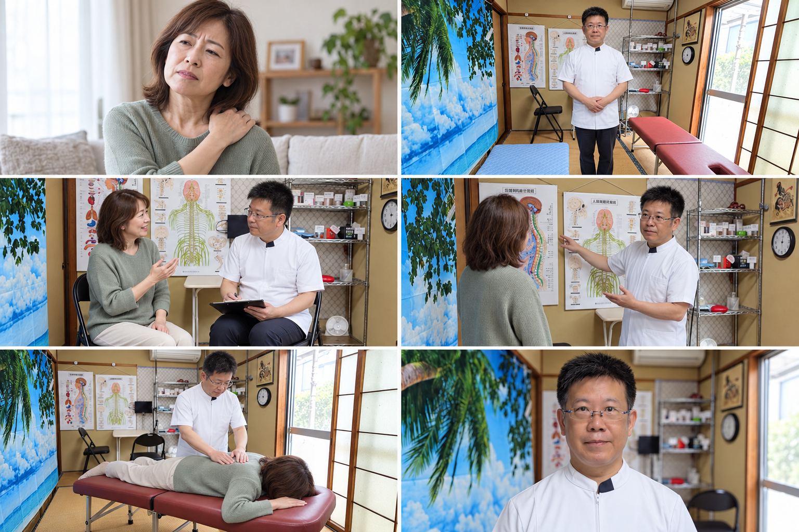
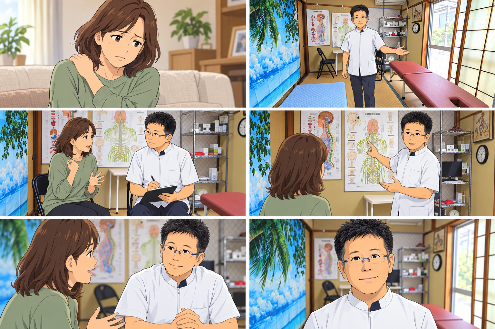
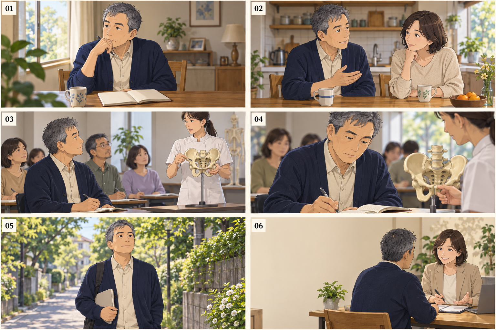

FILM 01 / 実写風・店舗紹介
まずは、話してみませんか。
近隣の方に、先生の人柄と相談しやすさを伝える。
対象：近隣の中高年を中心に、肩・腰や姿勢が気になる方

画像を押すと拡大できます。左上から右へ、01〜06の順です。
SCENE 01 · 0–4秒
日常の気がかり
- 映像・構成
- 自宅で肩に手を添える女性。ゆっくり寄り、悩みに共感。
- ナレーション
- 肩や腰の気がかり、相談してみませんか。
- 画面字幕
- その肩・腰の悩み、
相談してみませんか。
SCENE 02 · 4–8秒
先生との出会い
- 映像・構成
- 実際の畳の院内で先生がお迎え。海の壁掛け・障子・ベッドを見せる。
- ナレーション
- 知多市にしの台の、Nori施術院。
- 画面字幕
- 知多市にしの台
Nori施術院
SCENE 03 · 8–13秒
まず、お話から
- 映像・構成
- 目線の高さを合わせた対話。先生の表情と相づちを見せる。
- ナレーション
- まずは、お話を聞くことから。
- 画面字幕
- まずは、お話を聞くことから。
SCENE 04 · 13–18秒
骨盤・姿勢に目を向ける
- 映像・構成
- 実際の壁面の人体図を使った説明イメージ。説明の内容は先生確認。
- ナレーション
- 骨盤や姿勢に目を向けて。
- 画面字幕
- 骨盤・姿勢に目を向けて
SCENE 05 · 18–24秒
落ち着いた施術イメージ
- 映像・構成
- 大きくひねる動きや強い音は使わない。手の位置・技法は先生確認。
- ナレーション
- 気になることは、遠慮なくお聞かせください。
- 画面字幕
- 気になることは、遠慮なく。
SCENE 06 · 24–30秒
相談へつなぐ
- 映像・構成
- 先生を右、院名と連絡先を左。最後は6秒確保して読める設計。
- ナレーション
- ご予約・ご相談は、Nori施術院へ。
- 画面字幕
- Nori施術院
ご予約・ご相談はお電話で
FILM 02 / アニメ・店舗紹介
身近な場所で、からだの相談。
生活の中の悩みと来院の流れを、やわらかく描く。
対象：初めてのカイロに少し不安がある、地域の幅広い世代

画像を押すと拡大できます。左上から右へ、01〜06の順です。
SCENE 01 · 0–4秒
家事の合間に
- 映像・構成
- 家事の手を止める女性。痛みの誇張より、日常の小さな気がかり。
- ナレーション
- からだのこと、つい後回しにしていませんか。
- 画面字幕
- からだのこと、
つい後回しにしていませんか。
SCENE 02 · 4–8秒
相談する一歩
- 映像・構成
- 実際の和室の院内を見せる。畳・海の壁掛け・赤茶色ベッドをアニメ化。
- ナレーション
- 身近な場所で、からだの相談。
- 画面字幕
- 身近な場所で、からだの相談。
SCENE 03 · 8–13秒
やさしい迎え入れ
- 映像・構成
- 先生の眼鏡・髪型・白い制服をアニメ化。奥の折り畳み椅子でお話を伺う。
- ナレーション
- Nori施術院が、お話を伺います。
- 画面字幕
- はじめまして、Nori施術院です。
SCENE 04 · 13–18秒
わかりやすく伝える
- 映像・構成
- 実際の壁面の人体図を使い、先生と相談者の会話で説明を見せる。
- ナレーション
- 骨盤や姿勢のことを、一緒に考えて。
- 画面字幕
- 骨盤や姿勢のことを、一緒に。
SCENE 05 · 18–24秒
不安を話せる時間
- 映像・構成
- 相談中の表情を寄りで見せる。施術効果のビフォーアフターにはしない。
- ナレーション
- 気になることから、話してみませんか。
- 画面字幕
- 気になることから、話してみよう。
SCENE 06 · 24–30秒
地域の相談先として
- 映像・構成
- 院名と連絡先を大きく表示。先生のアニメ化は本人確認後に統一。
- ナレーション
- 知多市にしの台、Nori施術院。
- 画面字幕
- 知多市にしの台｜Nori施術院
ご予約・ご相談はお電話で
FILM 03 / フルAIアニメ・学びの入口
学ぶことから、新しい一歩。
自分や家族の健康への関心を、学びの相談につなげる。
対象：自分・家族の健康、将来の働き方や副業に関心がある方

画像を押すと拡大できます。左上から右へ、01〜06の順です。
SCENE 01 · 0–4秒
これからを考える
- 映像・構成
- 50代の架空の主人公がノートを開く。先生本人の経歴再現ではない。
- ナレーション
- これからの自分に、新しい学びを。
- 画面字幕
- これからの自分に、
新しい学びを。
SCENE 02 · 4–8秒
家族への関心
- 映像・構成
- 夫婦の自然な会話。家族への無資格施術を推奨する描写は入れない。
- ナレーション
- 自分や家族の、健康を考えることから。
- 画面字幕
- 自分のために。家族のために。
SCENE 03 · 8–13秒
カイロを知る
- 映像・構成
- 学ぶ場のイメージ。Nori施術院が資格を発行するようには見せない。
- ナレーション
- カイロプラクティックを学んでみませんか。
- 画面字幕
- カイロプラクティックを
学んでみませんか。
SCENE 04 · 13–18秒
学びに向き合う
- 映像・構成
- 受講・ノート・模型の寄り。実在する講座や会場の再現ではない。
- ナレーション
- 知ることが、最初の一歩。
- 画面字幕
- 知ることが、最初の一歩。
SCENE 05 · 18–24秒
将来の選択肢
- 映像・構成
- ノートを手に歩く主人公。収益・資格取得・開業の成功は約束しない。
- ナレーション
- 副業や仕事としての道も、まずは相談から。
- 画面字幕
- 副業・仕事としての道も、相談から。
SCENE 06 · 24–30秒
相談窓口を明確に
- 映像・構成
- 背景の人物は相談イメージ。連絡先を前面に置き、案内窓口を明確に。
- ナレーション
- 学びのご相談は、Nori施術院へ。
- 画面字幕
- 学びのご相談は
Nori施術院へ
確認していただきたいこと
構成と言い回し、先生の見た目、院内の再現、施術姿勢・説明内容、予約導線、掲載先と尺をご確認ください。修正は「動画01／シーン03」のように番号を添えてお知らせください。
01・02の院内は、Google掲載写真の畳・海の壁掛け・赤茶色の施術ベッド・障子などを反映しています。人物・動作・別角度や家具配置の細部はAIによる演出案で、実際の撮影記録ではありません。03の学習風景は架空のイメージです。参考動画の映像・音楽は流用しません。